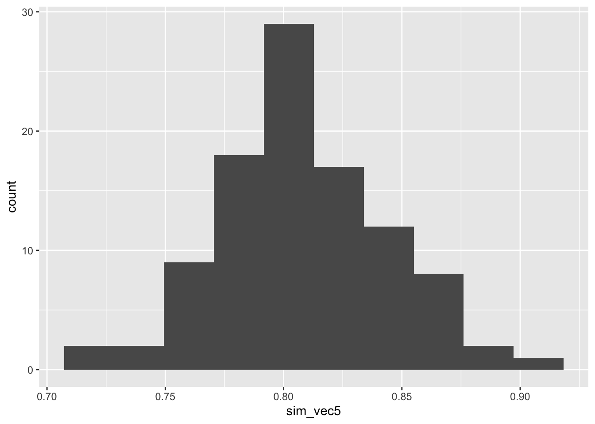
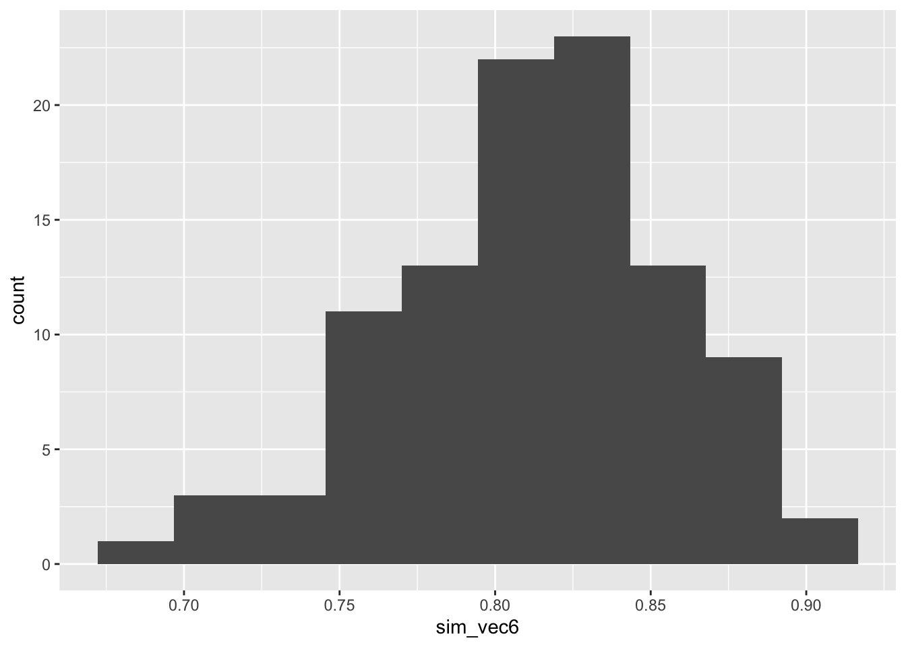
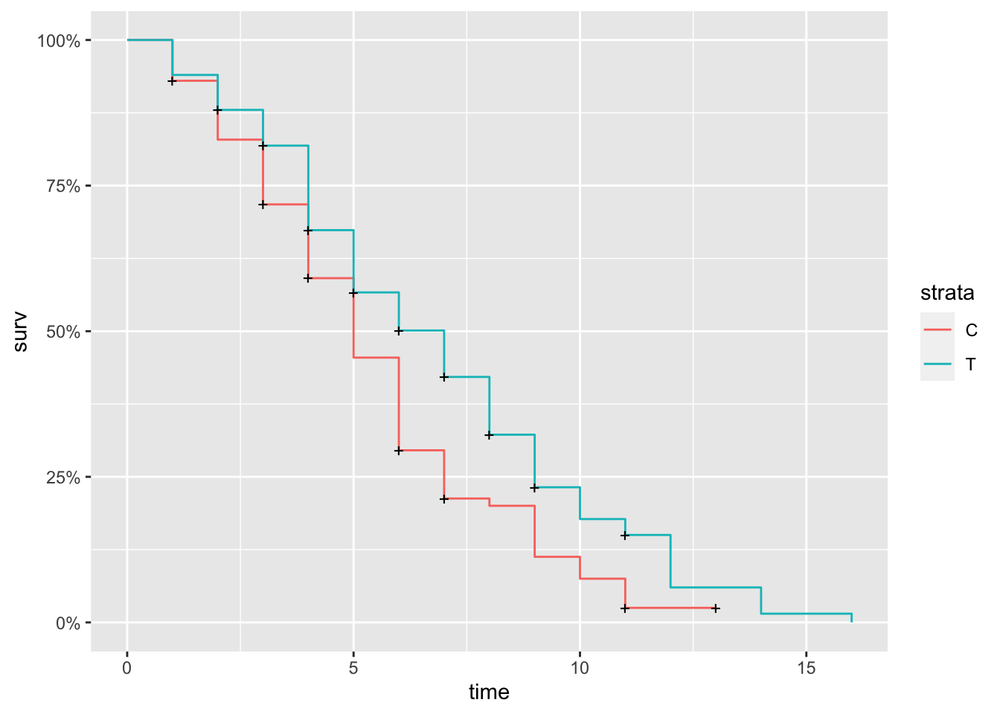

B Computer Practical 2
In this practical, we will focus on two main areas:
- Simulation methods for power analysis/determining sample size
- Analysis methods for Binary and Survival data
We’ll start with simulation for sample size, and apply that to a continuous outcome trial. We’ll then look at some analysis methods for binary and survival outcome data. Finally, we’ll use the the simulation method for sample size calculation for a survival outcome trial (more fitting, since we wimped out of tackling that problem in lectures!).
R practicalities - click here
There are many, many packages in R that implement methods for designing and analysing clinical trials (see a list at CRAN task view). We will look at some of these, and will also write our own code for some tasks. Remember that to install a package, you can do
If you have problems running R on your laptop, or on the university machines, the most foolproof way might be to use Github codespaces (thanks to Louis Aslett, who developed this for Data Science and Statistical Computing II). You may be familiar with this approach if you did Bayesian Computational Modelling III.
An advantage of this is that you can open the same codespace (the same instance of R) from any computer, so if you plan to work on things (for example your summative assignment, which will involve some R) from more than one computer, this might be ideal.
This requires you to have a github account (you can sign up for free here) and there is a short guide to creating a github account here.
B.1 Sample size by simulation (part I)
We’ll make use of several packages in this section. Installing them all now should hopefully prevent it from disrupting your flow! We’ll load them as we go along.
Notice that where there are code snippets like this one that you want to copy directly, you can hover your cursor in the top right of the code box and a ‘copy’ icon will appear.
A method for sample size calculation that has become increasingly popular in recent years is to use simulation. In simple terms, we write code that runs the trial many, many times in order to determine how many participants we need to achieve the power required. We can estimate the power by the proportion of simulated trials in which the null hypothesis was rejected.
Because the code necessarily works by fixing the number of participants and investigating the effect on the power of the trial, this is often referred to as power-calculation, but it is the same sample size issue, approached from a different angle. Arnold et al. (2011) gives a thorough, readable and interesting case study of the use of power simulation in a cluster randomised trial investigating different sanitation-related interventions in rural communities in Bangladesh.
This approach has the following advantages over the formula-based methods presented in Section 2:
- Transparency: If the data generating mechanism is made clear, then the assumptions behind the trial are also clear, and the simulation can be replicated by anyone. Reproducibility is a big issue in clinical trials.
- Flexibility: Whereas the methods in Section 2 are limited to very specific circumstances, one can simulate arbitrarily complex or unusual trials.
- Practice: This process requires us to perform our planned analysis at the planning stage, thus raising any potential issues early enough to adapt the statistical analysis plan.
Arguably the first and third advantages could also be true (though aren’t automatically) of a well-planned trial that used conventional sample size formulae, but the second is an advantage unique to simulation.
B.1.1 The simulation method
Note: really we should be using more than 100 simulations, but so that the code runs in a sensible amount of time I’ve reduced the number. Feel free to increase it if you want to, but you’ll have to wait a little while for it to run.
A power simulation starts by specifying the form of the model that will be used to analyse the data. We’ll start by assuming a continuous random variable as output, as we did in Section 2.
B.1.1.1 Power simulation for a t-test
We’ll start by taking a simulation approach to recreate the most ‘vanilla’ scenario, where we have a continuous outcome \(Y\) and wish to conduct a \(t\)-test on the outcome.
Recall that the sample size formula we found was Equation (2.4), shown again below:
\[N = \frac{2\sigma^2\left(z_\beta + z_{\frac{\alpha}{2}}\right)^2}{\tau_M^2},\] where \(N\) is the number of participants required in each trial arm, \(\sigma^2\) is the variance of the outcome \(Y\) in each group, and \(\tau_M\) is the minimum detectable effect size (or minimum clinically important difference), the smallest difference between \(\mu_C\) and \(\mu_T\) (the treatment arm means) that we want to be able to detect with significance level \(\alpha\) and power \(1-\beta\).
These variables give us all we need to simulate trial data. Essentially, the model we put forward is
\[ Y_i= \sim \begin{cases} N\left(\mu,\;\sigma^2\right)&\;\text{ if participant }i\text{ is in group }C\\ N\left(\mu + \tau_M,\;\sigma^2\right)&\;\text{ if participant }i\text{ is in group }T. \end{cases} \]
Therefore, to simulate data from a trial like this, we need to specify values for \(\mu,\;\tau_M\) and \(\sigma^2\).
Then, the steps for each simulation will be
- Simulate trial data
- Conduct an un-paired, two-tailed \(t\)-test on the data
- Note whether \(H_0:\;\tau_M=0\) is rejected
Having done this for some number \(n_{sim}\) of simulations, we return the proportion of simulations in which \(H_0\) was rejected, and this is our power estimate.
If the power estimate is smaller than we would like, we increase the number of participants in our simulated trial data and try again. Conversely, we decrease the number of participants if the power estimate is larger than we need.
Exercise B.1 By generating data for group \(C\) and group \(T\) according to the distributions above, conduct a power simulation for the trial scenario described in Example 2.1, with the aim of finding the number \(N\) of participants required in each arm for a power of 0.9 (\(\beta=0.1\)) and a confidence level of \(\alpha=0.05\). How consistent are your results? What issues does this raise around choosing a sample size?
Click to reveal solution
The sensible first thing to do is to write a function that does this for general \(n_{sim},\,N,\,\mu,\,\sigma^2\) and \(\tau_M\). The very simplest way would be the following, where we generate \(N\) participants per arm, and their data.
ttest_sim = function(
nsim, # the number of simulations to use
N, # number of participants per trial arm
mu, # mean outcome (for group C / under H0)
tm, # minimum detectable effect size
sd # sd of outcome
){
H0_reject_vec = rep(NA, nsim) # to store 1 if H0 rejected, 0 if fail to reject H0
for (i in 1:nsim){
out_groupC = rnorm(N, mean=mu, sd=sd)
out_groupT = rnorm(N, mean=mu + tm, sd=sd)
ttest = t.test(
out_groupC, out_groupT,
alternative = "two.sided",
var.equal = T, conf.level = 0.95)
H0_reject_vec[i] = ifelse(ttest$p.value<0.05, 1, 0)
}
power.est = mean(H0_reject_vec)
power.est
}For a sanity check, we can put in the number we got from the equation in Section 2. It is usual to need to specify a mean \(\mu\), but it doesn’t matter what it is (in this formulation at least!), so the number below is arbitrary.
## [1] 0.78and this is close to what we expect from the formula approach. To see how consistent this result is, we can see what happens over many sets of simulations
sim_vec1 = rep(NA, 100)
for (i in 1:100){
sim_vec1[i] = ttest_sim(nsim=100, N=113, mu=5, tm=3, sd=8)
}
ggplot(mapping = aes(sim_vec1)) + geom_histogram(bins=10) So although the mean power is around 0.8, as we expect, there is some variation.
So although the mean power is around 0.8, as we expect, there is some variation.
To achieve \(1-\beta=0.9\) we need to increase \(N\). It turns out that around 150 participants in each arm gives a mean power of around 0.9.
sim_vec2 = rep(NA, 100)
for (i in 1:100){
sim_vec2[i] = ttest_sim(nsim=100, N=150, mu=5, tm=3, sd=8)
}
ggplot(mapping = aes(sim_vec2)) + geom_histogram(bins=10)
It is reasonable however, to choose a number such that we are more than 50% confident of our study having the power we require. We may for example choose \(N\) so that the estimated power is at least 0.9 in some high proportion (say 90%) of the simulations.
A useful feature of the simulation approach is that it’s much easier to investigate what happens if the real data deviate in some way from the assumptions we’ve made.
Exercise B.2 Adapt your code (or my code) from Exercise B.1 to take into account the possibility of the outcome variances being different in the two groups. What is the effect on the estimated power if the outcome variance in group \(T\) is 25% larger than the variance in group \(C\)?
Click to reveal solution
The change we need to make is to include a variance parameter for each group, rather than a common one. Note that we aren’t changing the t.test function to use unequal variances, as it is common practice to keep assuming equal variances.
ttest_sim2 = function(
nsim, # the number of simulations to use
N, # number of participants per trial arm
mu, # mean outcome (for group C / under H0)
tm, # minimum detectable effect size
sdC, # sd of outcome in group C
sdT # sd of outcome in group T
){
H0_reject_vec = rep(NA, nsim) # to store 1 if H0 rejected, 0 if fail to reject H0
for (i in 1:nsim){
out_groupC = rnorm(N, mean=mu, sd=sdC)
out_groupT = rnorm(N, mean=mu + tm, sd=sdT)
ttest = t.test(
out_groupC, out_groupT,
alternative = "two.sided",
var.equal = T, conf.level = 0.95)
H0_reject_vec[i] = ifelse(ttest$p.value<0.05, 1, 0)
}
power.est = mean(H0_reject_vec)
power.est
}If the variances are equal, this gives the same as before (approximately)
## [1] 0.89However, if we increase the outcome variance in group \(T\) by 25%, things change:
## [1] 0.74sim_vec3 = rep(NA, 100)
for (i in 1:100){
sim_vec3[i] = ttest_sim2(nsim=1000, N=150, mu=5, tm=3, sdC=8, sdT=10)
}
ggplot(mapping = aes(sim_vec3)) + geom_histogram(bins=10)Figure B.1: Power estimates for 100 sets of 100 simulations.
By contrast, if the outcome variance is lower (this is much less likely) then the power will be higher than calculated:
sim_vec4 = rep(NA, 100)
for (i in 1:100){
sim_vec4[i] = ttest_sim2(nsim=1000, N=150, mu=5, tm=3, sdC=8, sdT=6)
}
ggplot(mapping = aes(sim_vec4)) + geom_histogram(bins=10)
When using simulation in earnest, it is best to recreate as many features of the trial as we can, and this includes the allocation. If we were using a method that guaranteed [close to] exactly equal groups, then the above method is OK. However, this is not always the case. We will think more about this in the next section, but will implement it fairly simply now.
Exercise B.3 Recreate the function from Exercise B.2, where the two groups have different unequal variances. This time, simulate the data sequentially, using simple random sampling as the allocation method.
- What happens to the power distribution for the scenario we considered in that question?
- What happens for a much smaller \(N\), say \(N=25\)?
Click for solutions
For this method, we work through all \(2N\) participants sequentially, allocating them with equal probability to group \(C\) or \(T\). For readability, in these solutions the simulation of one trial is written as its own function, which is then implemented nsim times.
one_trial_srs = function(
N, # number of participants per trial arm
mu, # mean outcome (for group C / under H0)
tm, # minimum detectable effect size
sdC, # sd of outcome in group C
sdT # sd of outcome in group T
){
## Create empty vectors to contain output for groups C and T
outC = integer()
outT = integer()
for (i in 1:(2*N)){
# allocate using SRS
arm = sample(c("C", "T"), size=1)
# generate outcome according to groups' distributions
if (arm == "C"){
outi = rnorm(1, mean=mu, sd=sdC)
outC = c(outC, outi)
} else if (arm == "T"){
outi = rnorm(1, mean=mu+tm, sd=sdT)
outT = c(outT, outi)
}
}
# conduct t-test for this trial
t.test(x=outC, y=outT,
alternative = "two.sided", paired=F,
var.equal=T, conf.level=0.95)
}
ttest_sim_srs = function(
nsim, # the number of simulations to use
N, # number of participants per trial arm
mu, # mean outcome (for group C / under H0)
tm, # minimum detectable effect size
sdC, # sd of outcome in group C
sdT # sd of outcome in group T
){
H0_reject_vec = rep(NA, nsim) # to store 1 if H0 rejected, 0 if fail to reject H0
for (i in 1:nsim){
trial_i = one_trial_srs(N, mu, tm, sdC, sdT)
H0_reject_vec[i] = ifelse(trial_i$p.value<0.05, 1, 0)
}
power.est = mean(H0_reject_vec)
power.est
}
ttest_sim_srs(nsim=100, N=150, mu=5, tm=3, sdC=8, sdT=10)## [1] 0.81To see the distribution for many simulations, we can do
sim_vec5 = rep(NA, 100)
for (i in 1:100){
sim_vec5[i] = ttest_sim_srs(nsim=100, N=150, mu=5, tm=3, sdC=8, sdT=10)
}
ggplot(mapping = aes(sim_vec5)) + geom_histogram(bins=10) and we see that the spread is much higher than when we had two exactly equal groups, as in Figure B.1.
If \(N\) is smaller, the variance in the power estimates will be higher, because the potential for imbalance will be greater.
B.1.1.2 Power simulation for ANCOVA
Thinking of a somewhat more complex model, we might want to perform a power simulation for an ANCOVA model.
We’ll write our data-generating model for the outcome \(X_i\) as
\[ \begin{aligned} x_i & = \mu + \rho \left(b_i - \mu_B\right) + \epsilon_i & \text{ in group C}\\ x_i & = \mu + \tau + \rho \left(b_i - \mu_B\right) + \epsilon_i & \text{ in group T}&. \end{aligned} \] where \(\epsilon_i\sim N\left(0,\,\sigma^2_{\epsilon}\right)\). Now, we need to generate a value of the baseline measurement \(b_i\) for each patient, and specify values for \(\mu\) (the mean outcome in group C / under \(H_0\)), \(\mu_B\) (the mean baseline measurement), \(\tau_M\) (the minimum detectable effect size, taking the place of \(\tau\) in the above equation), \(\rho\) (the correlation between baseline and outcome measurement) and \(\sigma^2_{\epsilon}\). Some of these are quantities that might be well-understood from the literature, but others are more speculative.
Exercise B.4 Conduct a power simulation by simulating 100 participants in each group with the distributions above, where
- \(b_i\sim N\left(\mu_B,\,5^2\right)\) for all \(i\)
- \(\epsilon_i\sim N\left(0,\,1^2\right)\) for all \(i\)
- \(\mu = 60\)
- \(\rho = 0.65\)
- \(\mu_B = 50\)
- \(\tau_M = 3\)
For now, assume that the participants are allocated by simple random sampling.
Click for solutions
Now that we have a baseline variable to keep track of, we should create a data frame of participants as we generate them.
ancova_trial_srs = function(
N, # Number of participants per group
mu_B, # baseline mean
mu, # outcome mean (control group / H_0)
rho, # correlation between baseline and outcome
tm, # minimum detectable effect size
sd_eps, # SD of error
sd_B # SD of baseline measurement
){
trial_mat = matrix(NA, ncol=3, nrow=2*N)
trial_df = data.frame(trial_mat)
names(trial_df) = c("baseline", "arm", "outcome")
for (i in 1:(2*N)){
bas_i = rnorm(1, mean=mu_B, sd=sd_B)
trial_df$baseline[i] = bas_i
alloc_i = sample(c("C", "T"), 1)
trial_df$arm[i] = alloc_i
eps_i = rnorm(1, mean=0, sd=sd_eps)
if(alloc_i == "C"){
out_i = mu + rho*(bas_i - mu_B) + eps_i
} else if (alloc_i == "T"){
out_i = mu + tm + rho*(bas_i - mu_B) + eps_i
}
trial_df$outcome[i] = out_i
}
model.fit = lm(outcome ~ baseline + arm, data=trial_df)
summary(model.fit)
}
ancova_sim_srs = function(
nsim, # the number of simulations to use
N, # Number of participants per group
mu_B, # baseline mean
mu, # outcome mean (control group / H_0)
rho, # correlation between baseline and outcome
tm, # minimum detectable effect size
sd_eps, # SD of error
sd_B # SD of baseline measurement
){
H0_reject_vec = rep(NA, nsim) # to store 1 if H0 rejected, 0 if fail to reject H0
for (i in 1:nsim){
trial_i = ancova_trial_srs(N, mu_B, mu, rho, tm, sd_eps, sd_B)
H0_reject_vec[i] = ifelse(trial_i$coefficients[3,4]<0.05, 1, 0)
}
power.est = mean(H0_reject_vec)
power.est
}sim_vec6 = rep(NA, 100)
for (i in 1:100){
ancova_trial_i = ancova_sim_srs(nsim=100, N=150, mu_B=50, mu=60, rho=0.65, tm=2, sd_eps=1, sd_B = 5)
sim_vec6[i] = ttest_sim_srs(nsim=100, N=150, mu=5, tm=3, sdC=8, sdT=10)
}
ggplot(mapping = aes(sim_vec6)) + geom_histogram(bins=10)
We could extend this in many ways to better understand the uncertainty around the power for a given sample size. For example:
- Trying different allocation methods
- Incorporating uncertainty around quantities like \(\mu,\,\mu_B,\,\rho\) etc.
But we don’t have time in this practical!
B.2 Analysis for Binary and Survival data
B.2.1 Binary data
Possible dataset - change this to questions, obviously. There might be more interesting ones, check medical data file. Also, include some on model validation through holding data back - read about this a bit?
Example B.1 The data in this example is from a trial in which a drug is being tested for whether it improves the conditions of a respiratory condition. For each patient, we have the following baseline covariates:
- sex
- age
- treatment centre (centre 1 or centre 2)
- symptom status (poor = 0, good = 1).
The outcome variable is whether the status of the patient’s symptoms are poor (0) or good (1) after four months of the trial. The first model we fit involves all covariates:
model1 = glm(status ~ centre + treatment + sex + age + status0,
family = binomial(link='logit'), data=resp_4)
summary(model1)##
## Call:
## glm(formula = status ~ centre + treatment + sex + age + status0,
## family = binomial(link = "logit"), data = resp_4)
##
## Coefficients:
## Estimate Std. Error z value Pr(>|z|)
## (Intercept) -0.83921 0.67498 -1.243 0.213757
## centre2 1.27397 0.48546 2.624 0.008684 **
## treatmenttreatment 1.08498 0.47415 2.288 0.022122 *
## sexmale 0.33480 0.60171 0.556 0.577924
## age -0.02978 0.01805 -1.650 0.099035 .
## status0good 1.72562 0.47024 3.670 0.000243 ***
## ---
## Signif. codes: 0 '***' 0.001 '**' 0.01 '*' 0.05 '.' 0.1 ' ' 1
##
## (Dispersion parameter for binomial family taken to be 1)
##
## Null deviance: 153.44 on 110 degrees of freedom
## Residual deviance: 119.34 on 105 degrees of freedom
## AIC: 131.34
##
## Number of Fisher Scoring iterations: 4And we can plot the separation plot.
fit1 = predict(model1, resp_4, type = "response")
separationplot(fit1, (as.numeric(resp_4$status)-1) )Having done this we can fit a second model with only those covariates that appear to be significantly active:
model2 = glm(status ~ centre + treatment + status0,
family = binomial(link='logit'), data=resp_4)
summary(model2)##
## Call:
## glm(formula = status ~ centre + treatment + status0, family = binomial(link = "logit"),
## data = resp_4)
##
## Coefficients:
## Estimate Std. Error z value Pr(>|z|)
## (Intercept) -1.6430 0.4436 -3.704 0.000212 ***
## centre2 1.1006 0.4458 2.469 0.013554 *
## treatmenttreatment 1.0237 0.4532 2.259 0.023891 *
## status0good 1.7286 0.4601 3.757 0.000172 ***
## ---
## Signif. codes: 0 '***' 0.001 '**' 0.01 '*' 0.05 '.' 0.1 ' ' 1
##
## (Dispersion parameter for binomial family taken to be 1)
##
## Null deviance: 153.44 on 110 degrees of freedom
## Residual deviance: 122.17 on 107 degrees of freedom
## AIC: 130.17
##
## Number of Fisher Scoring iterations: 4The separation plot shows that the model is OK (though certainly not brilliant).
First of all, we see that the treatment is significant, and that all other things being equal, being in the treatment group increases the log of the odds ratio by around 1.024. We can construst a 95% confidence interval for this using the estimate and standard error of the coefficient (shown in the R output above),
\[1.024 \pm 1.96 \times{0.453} = \left(0.136,\; 1.912\right).\] Taking the exponent, the 95% confidence interval for the effect of the treatment on the odds of ‘good’ symptom status at 4 months is \[\left(\exp(0.136),\; \exp(1.912)\right) = \left(1.145,\;6.768\right).\]
Using the coefficient estimates from model2 above, we see
\[\log\frac{\pi}{1-\pi} = -1.643 + 1.101\left(\text{centre}=2\right) + 1.024\left(\text{treatment}=1\right) + 1.729\left(\text{baseline status}=1\right), \] where \(\pi\) is the probability of the symptom status being ‘good’ (1) at four months. The odds of the outcome being 1 can be estimated from this equation by taking the exponent. For example, for a patient at treatment centre 2, in the treatment group, with ‘good’ baseline status, the odds of a ‘good’ status at 4 months are approximately
\[ \begin{aligned} \frac{\pi}{1-\pi} & =\exp\left[ -1.643 + 1.101 + 1.024 + 1.729\right] \\ & = \exp\left(2.211\right)\\ & = 9.125 \end{aligned} \] which corresponds to a probability of a ‘good’ status at four months of 0.901.
By contrast, for a patient in the treatment group at treatment centre 1, who had ‘poor’ symptoms at baseline, the odds of a ‘good’ status at 4 months are approximately
\[ \begin{aligned} \frac{\pi}{1-\pi} & =\exp\left[ -1.643 + 1.024 \right] \\ & = \exp\left(-0.619\right) \\ & = 0.538. \end{aligned} \] Rearranging this for probability we find \(\pi = 0.350\).
However, if that same participant had been in the control group instead, we would have
\[ \begin{aligned} \frac{\pi}{1-\pi}& = \exp\left(-1.643\right)\\ & = 0.193 \end{aligned} \] and the estimated probability of having ‘good’ symptom status at four months would be 0.162.
Extend this by including SE - also some info about how this is found? And generating confidence intervals for these predicted probabilities?
## site risk rx logodds odds prob
## 1 2_IU 1 0_placebo -2.87 0.06 0.05
## 2 2_IU 2 0_placebo -2.28 0.10 0.09
## 3 2_IU 3 0_placebo -1.70 0.18 0.15
## 4 2_IU 4 0_placebo -1.11 0.33 0.25
## 5 2_IU 5 0_placebo -0.53 0.59 0.37
## 6 1_UM 1 0_placebo -1.65 0.19 0.16
## 7 1_UM 2 0_placebo -1.06 0.35 0.26
## 8 1_UM 3 0_placebo -0.48 0.62 0.38
## 9 1_UM 4 0_placebo 0.11 1.11 0.53
## 10 1_UM 5 0_placebo 0.69 2.00 0.67
## 11 2_IU 1 1_indomethacin -3.62 0.03 0.03
## 12 2_IU 2 1_indomethacin -3.03 0.05 0.05
## 13 2_IU 3 1_indomethacin -2.45 0.09 0.08
## 14 2_IU 4 1_indomethacin -1.86 0.15 0.13
## 15 2_IU 5 1_indomethacin -1.28 0.28 0.22
## 16 1_UM 1 1_indomethacin -2.40 0.09 0.08
## 17 1_UM 2 1_indomethacin -1.81 0.16 0.14
## 18 1_UM 3 1_indomethacin -1.23 0.29 0.23
## 19 1_UM 4 1_indomethacin -0.64 0.52 0.34
## 20 1_UM 5 1_indomethacin -0.06 0.94 0.49B.2.2 Survival data
The packages we need for this section are survival and ggfortify, so install and load those now.
The first dataset we will use is aml - this dataset is from a trial investigating whether the standard course of chemotheraphy should be extended for some additional cycles (‘maintenance’) for patients with Acute Myelogenous Leukemia.
Exercise B.5 Look at the help file for the aml dataset and make sure you understand what each variable is doing.
R might ask which aml dataset you want - in this case, choose the one from the survival package.
Click for solution
The data set aml has three columns
time- survival or censoring time for each patient. This is the last time at which that patient was recorded.status- censoring status. By convention, this is 1 if a death is observed (ie. for complete data) and 0 for censored data (ie. the time in thetimecolumn was the last time that patient was seen, and they were still alive)x- maintenance chemotherapy given? This is the treatment variable
The first step is to combine the first two columns into a form we can use. We do this using the Surv function in the package survival, which creates a ‘survival object’ that we can then use in various other functions. This object contains the times and the information about which observations are censored.
To create a survival object from some dataset dataframe containing a time variable and a censoring status variable, the general form is
or if you prefer,
Exercise B.6 Use the Surv function now on the aml data. The output will contain some notation you probably haven’t seen before - can you work out what it means?
Click for solution
We create the survival object for aml by
## [1] 9 13 13+ 18 23 28+ 31 34 45+ 48 161+ 5 5 8 8 12 16+ 23 27 30 33 43 45This is a vector of the time values, in the same order as in aml. You’ll notice that some have a ‘+’ attached. This denotes the censored observations (the notation reflects the fact that the true time of death/the event will be greater than this).
B.2.3 Fitting a survival curve
The next thing we probably want to do is to estimate the survival function, plot the survival curve. The first method we’ll use is the Kaplan-Meier estimator.
JUST USE THE COLON DATA!!!
B.2.3.1 Kaplan-Meier
To fit a Kaplan-Meier survival curve, we use the function survfit, which is specified using a formula, much like lm or glm. To fit a Kaplan-Meier estimate with a data frame split by treatment effect, the general form is
We can then use summary to see the intermediary calculations at each step, and plot (for base plot) or autoplot (from ggplot2 and ggfortify) to plot the curves.
Exercise B.7 Fit a Kaplan-Meier estimator to the aml data. View the table using summary. Plot the curves using autoplot.
Click for solution
To fit the Kaplan-Meier estimator we use
We can then look at the summary table and plot the data by
## Call: survfit(formula = surv_aml ~ x, data = aml)
##
## x=Maintained
## time n.risk n.event survival std.err lower 95% CI upper 95% CI
## 9 11 1 0.909 0.0867 0.7541 1.000
## 13 10 1 0.818 0.1163 0.6192 1.000
## 18 8 1 0.716 0.1397 0.4884 1.000
## 23 7 1 0.614 0.1526 0.3769 0.999
## 31 5 1 0.491 0.1642 0.2549 0.946
## 34 4 1 0.368 0.1627 0.1549 0.875
## 48 2 1 0.184 0.1535 0.0359 0.944
##
## x=Nonmaintained
## time n.risk n.event survival std.err lower 95% CI upper 95% CI
## 5 12 2 0.8333 0.1076 0.6470 1.000
## 8 10 2 0.6667 0.1361 0.4468 0.995
## 12 8 1 0.5833 0.1423 0.3616 0.941
## 23 6 1 0.4861 0.1481 0.2675 0.883
## 27 5 1 0.3889 0.1470 0.1854 0.816
## 30 4 1 0.2917 0.1387 0.1148 0.741
## 33 3 1 0.1944 0.1219 0.0569 0.664
## 43 2 1 0.0972 0.0919 0.0153 0.620
## 45 1 1 0.0000 NaN NA NA We can see from the table that the lower curve is the non-maintained arm - there is only one survivor of this group, and the data finish at \(t=45\).
We can see from the table that the lower curve is the non-maintained arm - there is only one survivor of this group, and the data finish at \(t=45\).
The function autoplot could also give us a 95% CI if we set conf.int=T (we didn’t go into how this is calculated in lectures) and we see that with the aml data the uncertainty is huge.
B.2.4 Comparing survival curves: likelihood ratio test
Having found the MLEs for the aml dataset assuming an exponential distribution, we can immediately perform a likelihood ratio test.
B.2.4.1 Fitting an exponential distribution
To fit an exponential distribution, we need to estimate \(\hat\lambda_C\) and \(\hat\lambda_T\), using
\[\hat\lambda_X = \frac{m_X}{\sum\limits_{i=1}^{n_X} t_i} = \frac{m_X}{t^+_X}, \] where \(n_X\) is the number of observations \(t_1,\ldots,t_{n_X}\) in group \(X\), of which \(m_X\) are censored.
Exercise B.8 Fit an exponential distribution for each treatment group to the aml data and plot the resulting estimated survival curves, along with the Kaplan Meier estimators from Exercise B.7 (for comparison).
Click for solution
To calculate \(\hat\lambda_C\) and \(\hat\lambda_T\) we need to find \(m_C,\;\,m_T\;,t^+_C\) and \(t^+_T\).
mC_aml = sum((aml$status==1)&(aml$x=="Nonmaintained"))
mT_aml = sum((aml$status==1)&(aml$x=="Maintained"))
tsum_aml_C = sum(aml$time[aml$x=="Nonmaintained"])
tsum_aml_T = sum(aml$time[aml$x=="Maintained"])
lamhat_aml_C = mC_aml / tsum_aml_C
lamhat_aml_T = mT_aml / tsum_aml_TWe can then plot the Survival curves using geom_function
# Define survival function for exponential density
exp_st = function(t, lambda){exp(-lambda*t)}
autoplot(km_aml, conf.int=F) + ylim(0,1) + theme_bw() +
geom_function(fun=exp_st, args=list(lambda = lamhat_aml_C), col="darkturquoise") +
geom_function(fun=exp_st, args=list(lambda = lamhat_aml_T), col="red") 
B.2.5 Comparing survival curves
Having found the MLEs for the aml dataset, assuming an exponential distribution, we can now immediately conduct a likelihood ratio test.
B.2.5.1 Likelihood ratio test
Recall that our test statistic (which we found in Section 8.1) is
\[ \lambda_{LR} = 2\left(m_C\log\left(\frac{m_C}{t^+_C}\right) + m_T\log\left(\frac{m_T}{t^+_T}\right) - m\log\left(\frac{m}{t^+}\right)\right),\]
which we then refer to a \(\chi^2_1\) distribution.
Exercise B.9 Conduct a likelihood ratio test for the aml data, with the null hypothesis that the survival curves are the same for both treatment groups. Before you calculate the answer, think about what you expect to see.
Click for solution
We already have the \(m_X\) and \(t^+_X\) from Exercise B.8, and we can easily find \(t^+\) and \(m\) from these.
and we can use these to compute \(\lambda_{LR}\):
LRstat_aml = 2*(mC_aml*log(mC_aml/tsum_aml_C) + mT_aml*log(mT_aml/tsum_aml_T) - m_aml*log(m_aml/tsum_aml))
LRstat_aml## [1] 4.061349Finally, we refer this to \(\chi^2_1\)
## [1] 0.04387544We find that we have just enough evidence to reject \(H_0\) at the 95% level.
B.2.5.2 Log-rank test
The log-rank test is most easily found using the function survdiff. This function has an argument rho that controls the type of test. If we set rho=1 then it performs a log-rank test.
The general form is similar to survfit:
Exercise B.10 Use survdiff to do a log rank test on the aml data. Do you expect the results to be similar to your results from Exercise B.9?
Click for solution
To conduct a log rank test we use
## Call:
## survdiff(formula = surv_aml ~ x, data = aml, rho = 0)
##
## N Observed Expected (O-E)^2/E (O-E)^2/V
## x=Maintained 11 7 10.69 1.27 3.4
## x=Nonmaintained 12 11 7.31 1.86 3.4
##
## Chisq= 3.4 on 1 degrees of freedom, p= 0.07B.2.5.3 Cox regression
Finally, we will fit the Cox regression model, so that we can include some baseline covariates. In the aml dataset there are no baseline
## Call:
## coxph(formula = Surv(time, status) ~ x, data = aml)
##
## coef exp(coef) se(coef) z p
## xNonmaintained 0.9155 2.4981 0.5119 1.788 0.0737
##
## Likelihood ratio test=3.38 on 1 df, p=0.06581
## n= 23, number of events= 18Exercise B.11 NOT: bladder (too complicated with follow ups) Veteran (in homework) cgd - could restrict to enum=1? colon - looks promising. Restrict to Obs and Lev+5FU
The dataset colon, also from the survival package, contains data from a trial of colon cancer patients, comparing three treatments: observation (obs), levamisole (Lev) and levamisole + 5-FU (Lev+5FU). To simplify things, we will restrict the data to those patients on Obs or Lev+5FU. The main report of this trial is Moertel et al. (1990).
For this data
- Look at the help file and make sure you understand what the columns mean (note that there are three possible datasets - we’re using
bladder, the simplest) - Fit Kaplan-Meier estimators to the survival curves for the two groups.
Click for solution
From the help file we see that rx is the treatment group, stop is the time variable, status gives the censoring status.
## 'data.frame': 1238 obs. of 16 variables:
## $ id : num 1 1 2 2 3 3 4 4 5 5 ...
## $ study : num 1 1 1 1 1 1 1 1 1 1 ...
## $ rx : Factor w/ 2 levels "Lev+5FU","Obs": 1 1 1 1 2 2 1 1 2 2 ...
## $ sex : num 1 1 1 1 0 0 0 0 1 1 ...
## $ age : num 43 43 63 63 71 71 66 66 69 69 ...
## $ obstruct: num 0 0 0 0 0 0 1 1 0 0 ...
## $ perfor : num 0 0 0 0 0 0 0 0 0 0 ...
## $ adhere : num 0 0 0 0 1 1 0 0 0 0 ...
## $ nodes : num 5 5 1 1 7 7 6 6 22 22 ...
## $ status : num 1 1 0 0 1 1 1 1 1 1 ...
## $ differ : num 2 2 2 2 2 2 2 2 2 2 ...
## $ extent : num 3 3 3 3 2 2 3 3 3 3 ...
## $ surg : num 0 0 0 0 0 0 1 1 1 1 ...
## $ node4 : num 1 1 0 0 1 1 1 1 1 1 ...
## $ time : num 1521 968 3087 3087 963 ...
## $ etype : num 2 1 2 1 2 1 2 1 2 1 ...We can therefore fit (and plot) the Kaplan-Meier estimator split by treatment group.
km_colon = survfit(Surv(time, status) ~ rx, data=colondf)
autoplot(km_colon, conf.int=F) + ylim(0,1)
Next we can find the MLE for each treatment group
mC_colon = sum((colondf$status==1)&(colondf$rx=="Obs"))
mT_colon = sum((colondf$status==1)&(colondf$rx=="Lev+5FU"))
tsum_colon_C = sum(colondf$time[colondf$rx=="Obs"])
tsum_colon_T = sum(colondf$time[colondf$rx=="Lev+5FU"])
lamhat_colon_C = mC_colon / tsum_colon_C
lamhat_colon_T = mT_colon / tsum_colon_TWe can then plot the Survival curves using geom_function
# Define survival function for exponential density
autoplot(km_colon, conf.int=F) + ylim(0,1) + theme_bw() +
geom_function(fun=exp_st, args=list(lambda = lamhat_colon_C), col="darkturquoise") +
geom_function(fun=exp_st, args=list(lambda = lamhat_colon_T), col="red") 
Figure B.2: Survival curves for groups C and T in colon study, fitted assuming an exponential distribution. Kaplan-Meier estimates also shown.
We see that this fit is quite poor.
and we can use these to compute \(\lambda_{LR}\):
LRstat_colon = 2*(mC_colon*log(mC_colon/tsum_colon_C) + mT_colon*log(mT_colon/tsum_colon_T) - m_colon*log(m_colon/tsum_colon))
LRstat_colon## [1] 35.0111Finally, we refer this to \(\chi^2_1\)
## [1] 3.278309e-09Highly significant, but because of the very poor fit in Figure B.2 not especially trustworthy.
Next, we can perform a log-rank test:
## Call:
## survdiff(formula = Surv(time, status) ~ rx, data = colondf, rho = 0)
##
## N Observed Expected (O-E)^2/E (O-E)^2/V
## rx=Lev+5FU 608 242 306 13.5 28.2
## rx=Obs 630 345 281 14.7 28.2
##
## Chisq= 28.2 on 1 degrees of freedom, p= 1e-07We see that the test statistic, although still very significant, is much lower than for the likelihood ratio test.
Finally, we fit a Cox regression model. In the first instance we can do this with just the treatment group as a covariate:
## Call:
## coxph(formula = Surv(time, status) ~ rx, data = colondf)
##
## coef exp(coef) se(coef) z p
## rxObs 0.44213 1.55602 0.08394 5.267 1.38e-07
##
## Likelihood ratio test=28.25 on 1 df, p=1.068e-07
## n= 1238, number of events= 587But we can also include other baseline covariates
## Call:
## coxph(formula = Surv(time, status) ~ rx + sex + age + obstruct +
## nodes, data = colondf)
##
## coef exp(coef) se(coef) z p
## rxObs 0.470039 1.600056 0.085522 5.496 3.88e-08
## sex -0.155126 0.856308 0.083835 -1.850 0.0643
## age -0.002940 0.997064 0.003400 -0.865 0.3872
## obstruct 0.072027 1.074685 0.105813 0.681 0.4961
## nodes 0.104607 1.110274 0.008493 12.317 < 2e-16
##
## Likelihood ratio test=146 on 5 df, p=< 2.2e-16
## n= 1214, number of events= 574
## (24 observations deleted due to missingness)and we see that as well as the treatment arm, the number of lymph nodes with detectable cancer (given by nodes) is highly significant, and sex is also fairly significant.
We can visualise this by further subsetting the Kaplan-Meier estimator
km_colon_bl = survfit(Surv(time, status) ~ rx + sex, data=colondf)
autoplot(km_colon_bl, conf.int=F)
nodes is a numeric output, so in order to get a visual impression of its effect on the survival curve we can bin it. For example, we can choose \(\texttt{nodes}\leq 4\) and \(\texttt{nodes}>4\).
colondf$nodes4 = sapply(1:nrow(colondf), function(i){ifelse(colondf$nodes[i]>4, 1, 0)})
km_colon_bl = survfit(Surv(time, status) ~ rx + nodes4, data=colondf)
autoplot(km_colon_bl, conf.int=F)